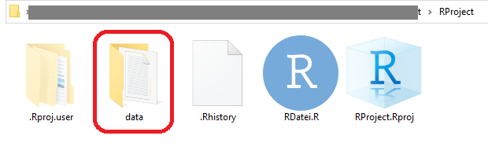
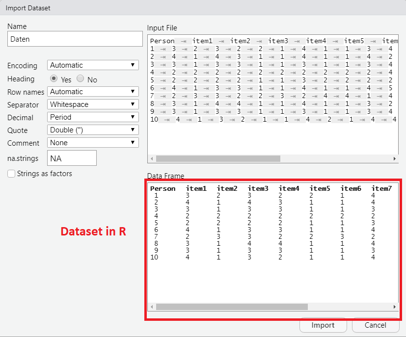
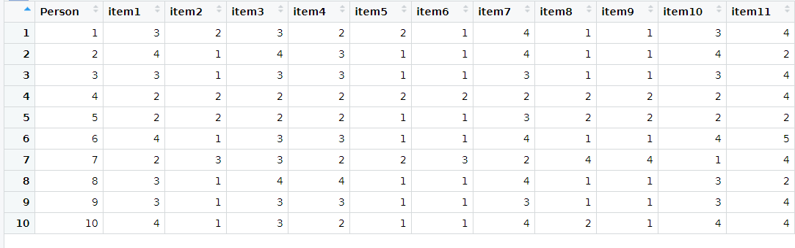

4 Datenmanagement I
4.1 Daten importieren
4.1.1 Organisation von Dateien
- Empfehlung: Einen Ordner für alle Datendateien innerhalb des Projektordners (bspw. data)

4.1.2 Exkurs: Dateipfade
Beispiel für den absoluten Pfad der Datei Daten.txt - lässt sich aus den Eigenschaften einer Datei entnehmen.
D:\\Dokumente\\Kurse\\Rintensiv\\Projektordner\\data\\Daten.txt
- Wenn nur vom Projektordner aus navigiert werden muss, dann entfällt bei der Pfadangabe der ganze Teil vor data (relative Pfadangabe)
Wichtig: R nutzt Backslash “\” zu anderen Zwecken, daher muss ein normaler Slash “/” genutzt werden
Die relative Pfadangabe für Daten.txt würde also so aussehen:
data/Daten.txt
4.1.3 Daten aus .txt, .csv, .xlsx und weiteren Dateiformaten auslesen
Dateipfad unter
file =immer in""angebenNavigieren innerhalb des Projektordners (Vorteil: keine vollständigen Dateipfade müssen angegeben werden)
header(default:FALSE): nimmt die erste Zeile als Variablennamensep(default:""): legt fest wie die Spalten in der Ursprungsdatei getrennt sinddec(default:"."): legt fest welches Zeichen zur Dezimaltrennung genutzt wird
Befehl für .csv Dateien
Befehl für .xlsx Dateien
Befehl für .sav Dateien (SPSS)
4.1.4 Alternative per Klickpfad
Im Environment auf Import Dataset klicken und gewünschtes Format auswählen:

Anschließend gewünschtes Dataset suchen und anklicken.
Vorschau mit allen Argumenten, die auch im read.table() enthalten sind:

Eingabe in die Konsole:
Vorteil:
- automatisch richtiger Befehl
- Vorschau
Nachteil
- Kompletter Dateipfad angegeben, nicht brauchbar für andere
4.1.5 Überblick verschaffen
str()gibt die Struktur des Dataframes aus
str(dataset)
'data.frame': 10 obs. of 12 variables:
$ Person: int 1 2 3 4 5 6 7 8 9 10
$ item1 : int 3 4 3 2 2 4 2 3 3 4
$ item2 : int 2 1 1 2 2 1 3 1 1 1
$ item3 : int 3 4 3 2 2 3 3 4 3 3
$ item4 : int 2 3 3 2 2 3 2 4 3 2
$ item5 : int 2 1 1 2 1 1 2 1 1 1
$ item6 : int 1 1 1 2 1 1 3 1 1 1
$ item7 : int 4 4 3 2 3 4 2 4 3 4
$ item8 : int 1 1 1 2 2 1 4 1 1 2
$ item9 : int 1 1 1 2 2 1 4 1 1 1
$ item10: int 3 4 3 2 2 4 1 3 3 4
$ item11: int 4 2 4 4 2 5 4 2 4 4dim()gibt die Dimensionen (Zeilen und Spalten) einer Matrix bzw. Dataframes an
- mit
head()lassen sich die erstenn =c(Zeilen, Spalten)anzeigen
head(x = dataset, n = c(2,11))
Person item1 item2 item3 item4 item5 item6 item7 item8
1 1 3 2 3 2 2 1 4 1
2 2 4 1 4 3 1 1 4 1
item9 item10
1 1 3
2 1 4View(Dataset) öffnet eine Ansicht ähnlich zu Excel (View groß geschrieben!)

names() gibt die Variablennamen des Datensatzes aus
names(dataset)
[1] "Person" "item1" "item2" "item3" "item4" "item5"
[7] "item6" "item7" "item8" "item9" "item10" "item11"Damit lassen sich auch Namen von Variablen im Datenesatz verändern
4.2 Daten speichern
4.2.1 Datensatz exportieren als .txt, .csv, .xlsx oder .sav
- Befehl:
write.table(x = data, file = "data/Daten.txt", row.names = FALSE)
- Argumente:
x: Welches Objekt soll exportiert werdenfile: Pfad und Name der neuen Datei (.txt am ende nicht Vergessen!)sep, dec: Wie beiread.tablerow.names(default:TRUE): Zeilennamen/ -nummerierung als eigene Spaltecol.names(default:TRUE): Variablennamen als erste Zeile speichern
Genauso wie bei den read- Funktionen gibt es auch
write.csv()für .csv Dateienwrite.xlsx()für .xlsx Dateien (Package “xlsx” benötigt)write_sav()für .sav Dateien (Package “haven” benötigt)
Wenn beispielsweise: file = “Unterordner/exportierteDatei.txt”, dann liegt die Datei im Unterodner. Wenn kein Pfad angegeben wird, dann liegt sie im Projektordner.
4.3 Datensätze zusammenfügen
4.3.1 Fälle hinzufügen
- Situation: Es wurde eine weitere Erhebung mit anderen Personen durchgeführt, in der die gleichen Items abgefragt wurden
dataset1 <- read.table("data/Daten.txt", header = TRUE)
head(dataset1,2)
Person item1 item2 item3 item4 item5 item6 item7 item8
1 1 3 2 3 2 2 1 4 1
2 2 4 1 4 3 1 1 4 1
item9 item10 item11
1 1 3 4
2 1 4 2dataset2 <- read.table("data/Daten_2.txt", header = TRUE)
head(dataset2,2)
Person item1 item2 item3 item4 item5 item6 item7 item8
1 11 5 3 5 3 2 6 4 4
2 12 3 5 2 3 5 3 3 2
item9 item10 item11
1 3 3 4
2 6 4 6- mit
rbind()lassen sich Daten (Vektoren, Matrizen, Dataframes) zeilenweise (reihenweise) zusammenfügen (rbind = rowbind) - es können beliebig viele Datensätze in diesem Befehl zusammengefügt werden
- Überprüfung
Bedingungen
- Die Datasets haben die gleiche Anzahl an Spalten
- Die Datasets haben die gleichen Namen für die Variablen
4.3.2 Variablen hinzufügen
Situation: Innerhalb der Erhebung gab es noch eine Abfrage von weiteren Items
dataset1 <- read.table("data/Daten.txt", header = TRUE)
head(dataset1,2)
Person item1 item2 item3 item4 item5 item6 item7 item8
1 1 3 2 3 2 2 1 4 1
2 2 4 1 4 3 1 1 4 1
item9 item10 item11
1 1 3 4
2 1 4 2dataset3 <- read.table("data/Daten_FB2.txt", header= TRUE)
head(dataset3,2)
Person item12 item13 item14 item15 item16 item17 item18
1 1 5 3 5 3 2 6 4
2 2 3 5 2 3 5 3 3
item19 item20 item21 item22
1 4 3 3 4
2 2 6 4 6- Mit
cbind()lassen sich Daten (Vektoren, Matrizen, Dataframes) spaltenweise zusammenfügen
- Überprüfung
Bedingung - Datensätze müssen gleiche Anzahl an Zeilen haben - Datensätze müssen gleich sortiert sein
Situation: Innerhalb der Erhebung gab es noch eine Abfrage von weiteren Items, allerdings fehlt eine Person \(\rightarrow\) cbind() führt nicht zum gewünschten Ergebnis
dataset1 <- read.table("data/Daten.txt", header = TRUE)
head(dataset1,2)
Person item1 item2 item3 item4 item5 item6 item7 item8
1 1 3 2 3 2 2 1 4 1
2 2 4 1 4 3 1 1 4 1
item9 item10 item11
1 1 3 4
2 1 4 2dataset4 <- read.table("data/Daten_FB2_NA.txt", header= TRUE)
head(dataset4,2)
Person item12 item13 item14 item15 item16 item17 item18
1 1 5 3 5 3 2 6 4
3 3 4 4 5 5 2 3 3
item19 item20 item21 item22
1 4 3 3 4
3 3 5 7 5- Mit
merge(…, …, by="...“)lassen sich Daten (Vektoren, Matrizen, Dataframes) spaltenweise besser zusammenfügen - Anhand einer Schlüsselvariablen (
by) können zusammengehörige Fälle erkannt werdenby: Welche Variable ist die Schlüsselvariable?by.x,by.y: wie by, aber separate Angabe pro Datensatz, z.B. wenn sie nicht gleich benannt istall: Alle Fälle behalten (TRUE) oder nur die in beiden Datensätzen vorhandenen (FALSE)all.x,all.y: wie all, aber nur für einen der Datensätzesort: Neu nach Schlüsselvariable sortieren? (TRUE = ja)
new_dataset3 <- merge(dataset1, dataset4, by = "Person", all = FALSE)
head(new_dataset3,2)
Person item1 item2 item3 item4 item5 item6 item7 item8
1 1 3 2 3 2 2 1 4 1
2 3 3 1 3 3 1 1 3 1
item9 item10 item11 item12 item13 item14 item15 item16
1 1 3 4 5 3 5 3 2
2 1 3 4 4 4 5 5 2
item17 item18 item19 item20 item21 item22
1 6 4 4 3 3 4
2 3 3 3 5 7 5\(\rightarrow\) Person 2 wird raus-gefiltert für alle restlichen Personen werden die neuen Variablen übernommen
all = FALSE: Nur die Fälle werden behalten, die in beiden Datensätzen vorhanden sind
new_dataset3 <- merge(dataset1, dataset4, by = "Person", all = TRUE)
head(new_dataset3,2)
Person item1 item2 item3 item4 item5 item6 item7 item8
1 1 3 2 3 2 2 1 4 1
2 2 4 1 4 3 1 1 4 1
item9 item10 item11 item12 item13 item14 item15 item16
1 1 3 4 5 3 5 3 2
2 1 4 2 NA NA NA NA NA
item17 item18 item19 item20 item21 item22
1 6 4 4 3 3 4
2 NA NA NA NA NA NA\(\rightarrow\) Person 2 bleibt erhalten. Die nicht vorhandenen VAriablen werden mit NA gefüllt